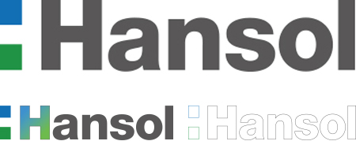
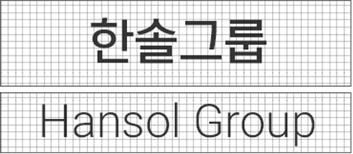

세계 지향적 워드마크
워드마크는 기업이미지를 집약적으로 상징하는 시각물로서
아이덴티티 시스템의 핵심이 되는 것으로 가장 중요한 기본요소이다.
새로운 워드마크는 다각화와 국제화로 세계 최우량 기업을 실현한다는
한솔의 의지를 나타내는 한솔의 영문 표기명과 두 개의 직사각형으로 구성되어있다
이 직사각형은 자연과 인간을 연결하는 한솔의 기본자세를 담은 것으로
위의푸른색은 하늘, 인류 미래를 아래의 초록색은 땅, 자연, 현재를 의미한다.
이것은 땅, 자연, 현재라는 미완성에서 하늘, 인류, 미래라는 이상향으로 전진하는데
징검다리 역할을 수행하겠다는 한솔의 의지를 천명하고 있다.
신뢰감을 주는 로고타입
로고타입은 신뢰와 신용을 유발시키는 책임있는 기업의 이미지를 시각적으로 구현한 상징물로
워드마크와 더불어 CI의중심이 되는 기본요소로 워드마크를 보조하여 사용된다.
본 로고타입은 한솔의 친근한 이미지를부각시키고 워드마크와 조화되도록 디자인된 것으로
한글, 영문의 2종이 있다.
한글 로고타입은 워드마크와 차별을 두기 위해 Light Type의 한글 중고딕체를 기본으로 개발하였다.
명확한 로고타입의 사용은 기업 이미지의 올바른 전달과 신뢰의 상징이므로 잘못 사용하지 않도록
주의해야 하며, 재생 시 시각적으로 변형되지 않도록철저히 관리하여야 한다.
영문 로고타입은 Helvetica Neue Light체로 한솔의 워드마크에 사용된 Heavy타입의 서체와 대비
되어 워드마크가 부각되면서 로고타입의 역할을할 수 있는 Light한 서체를 적용하였다.

